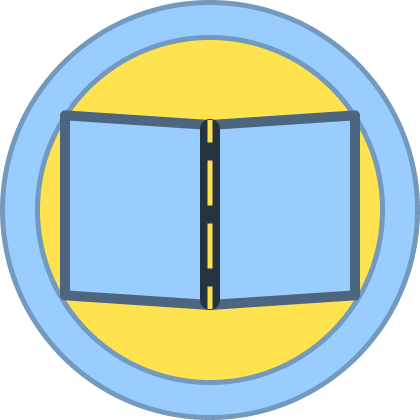

<mat-toolbar class="background-main site-header">

  <a routerLink="/" class="logo-link">
    
  </a>

  <div class="search-bar-wrapper" *ngIf="showSearchBar">
    <mat-form-field class="search-bar" appearance="outline">
      <mat-label>Em que podemos te instruir hoje?</mat-label>
      <input matInput [(ngModel)]="searchQuery" (keyup.enter)="onSearch()" type="text">
      <button mat-icon-button matSuffix (click)="onSearch()" aria-label="Buscar">
        <mat-icon>search</mat-icon>
      </button>
    </mat-form-field>
  </div>

  <div class="auth-buttons">
    <ng-container *ngIf="isLoggedIn; else loggedOutButtons">
      <button mat-flat-button routerLink="/painel">Meu Painel</button>
      <button mat-raised-button color="warn" (click)="logout()">Sair</button>
    </ng-container>

    <ng-template #loggedOutButtons>
      <button mat-stroked-button class="login-button" routerLink="/login">
        Login
      </button>
      <button mat-raised-button color="primary" routerLink="/signup">
        Cadastre-se
      </button>
    </ng-template>
  </div>

</mat-toolbar>
